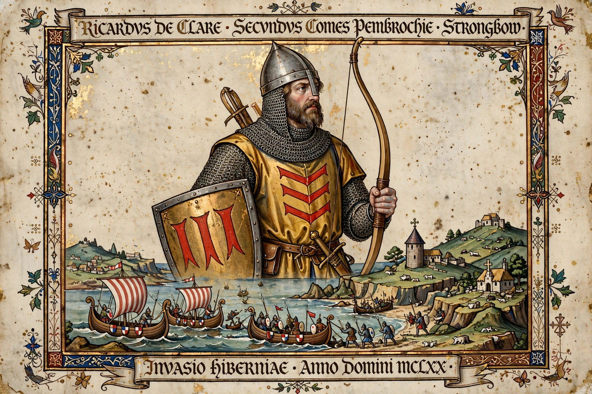

Richard FitzGilbert de Clare (c. 1130 – 20 April 1176), commonly known as Strongbow, was a Cambro-Norman lord notable for his leading role in the Norman invasion of Ireland. He was the second Earl of Pembroke in the de Clare line, though Henry II did not always recognise the title.

In 1168 the deposed Irish king of Leinster, Diarmait Mac Murchada, recruited Strongbow's help to recover his kingdom, promising his daughter Aoife in marriage and succession to Leinster. Norman forces landed in 1169; Strongbow arrived in August 1170, captured Waterford — where he married Aoife in the cathedral — and then took Dublin.
Fearing a rival Norman kingdom, King Henry II came to Ireland in 1171 to assert his authority; Strongbow surrendered Dublin and his conquests as fiefs of the crown, retaining Leinster as Henry's vassal. He later served Henry during the Revolt of 1173–74.
Strongbow died in Dublin in 1176 and was buried in Christ Church Cathedral. His tomb effigy there became famous, though the present figure may be a later replacement. His daughter Isabel de Clare married William Marshal, through whom the earldom passed.